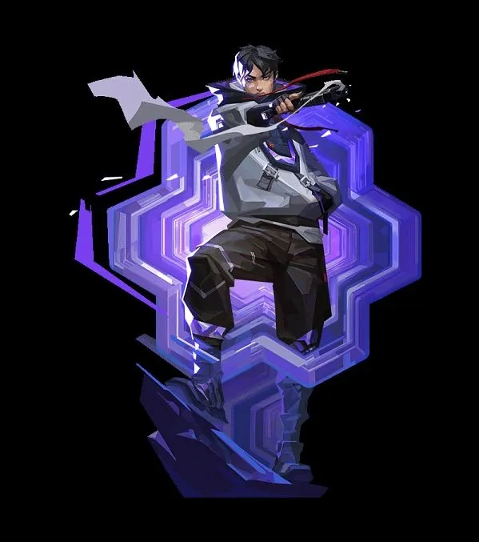

Me presento: soy estudiante de Ingenieria de Sistemas e Informatica en la Universidad Continental, una carrera que me apasiona por su mezcla de logica y creatividad. Desde siempre, los videojuegos han sido mi gran pasion, especialmente los shooters como Valorant, donde disfruto cada partida poniendo a prueba mis reflejos y estrategias.
Cuando no estoy frente a una pantalla, me encanta desconectar y salir a rodar en mi bicicleta. Pedalear al aire libre, sentir el viento y explorar nuevos caminos es mi forma favorita de recargar energias.
